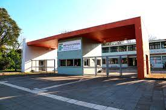

O IFRS Campus Bento Gonçalves é uma das unidades do Instituto Federal de Educação, Ciência e Tecnologia do Rio Grande do Sul (IFRS). Localizado na cidade de Bento Gonçalves, na região serrana do estado, o campus oferece cursos técnicos integrados ao ensino médio, cursos técnicos subsequentes, cursos superiores de tecnologia e pós-graduação.
Os cursos técnicos integrados são destinados a estudantes que estão cursando o ensino médio e desejam se preparar para o mercado de trabalho. Já os cursos técnicos subsequentes são voltados para aqueles que já concluíram o ensino médio e buscam uma formação técnica específica em diversas áreas.
Entre os cursos superiores de tecnologia oferecidos pelo IFRS Campus Bento Gonçalves, destacam-se os cursos de Gastronomia, Viticultura e Enologia e Processos Gerenciais. Além disso, o campus oferece programas de pós-graduação em nível de especialização nas áreas de Gestão de Negócios e Gestão de Projetos.
O campus conta com uma infraestrutura completa, incluindo salas de aula equipadas, laboratórios especializados, biblioteca, auditório e espaços para atividades esportivas e culturais. O corpo docente é formado por profissionais qualificados e experientes, que utilizam metodologias inovadoras e tecnologias educacionais avançadas para promover uma formação de qualidade aos estudantes.
O IFRS Campus Bento Gonçalves tem como missão oferecer uma formação educacional e profissional de excelência, comprometida com a transformação social, o desenvolvimento sustentável e a promoção da cidadania.